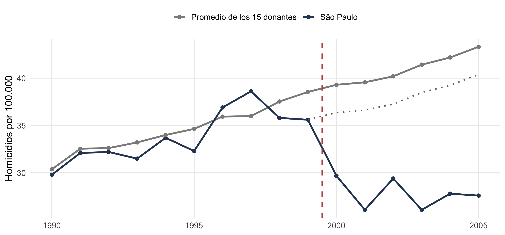
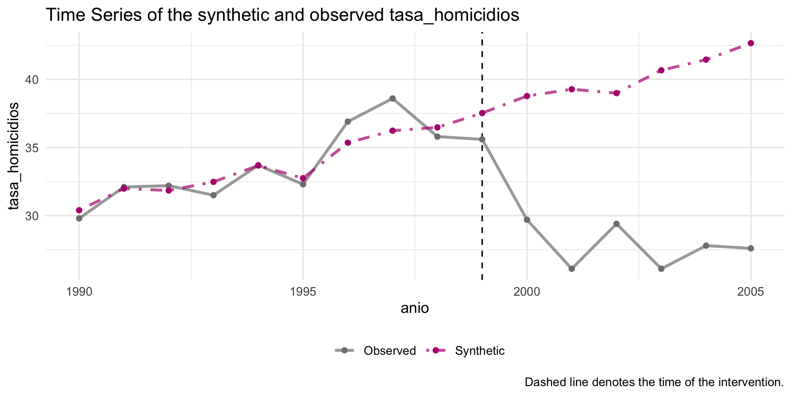
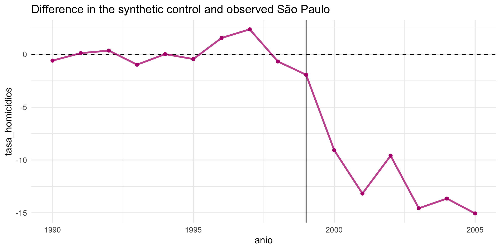
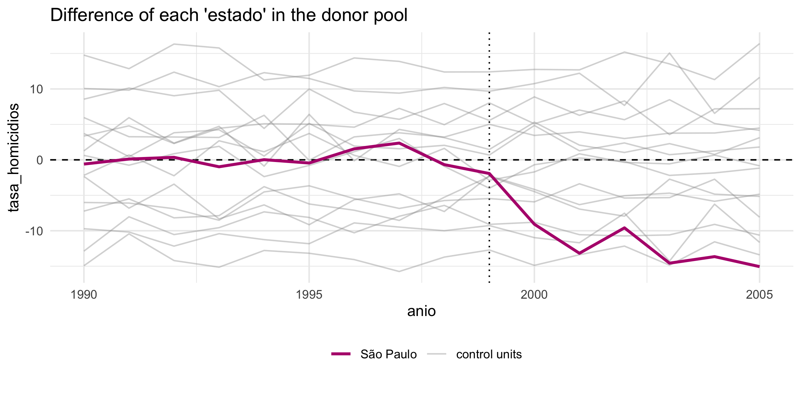
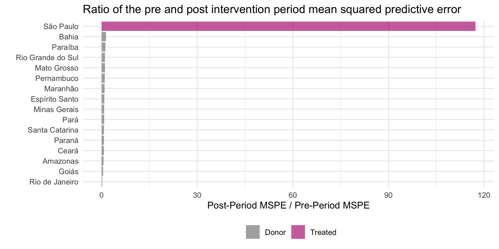
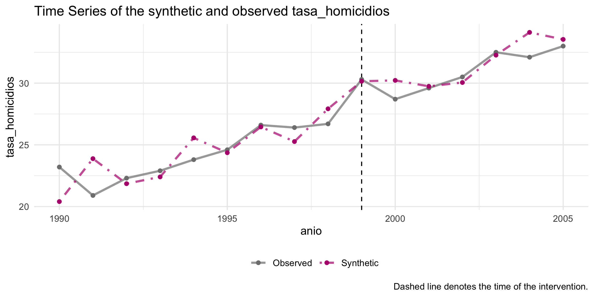
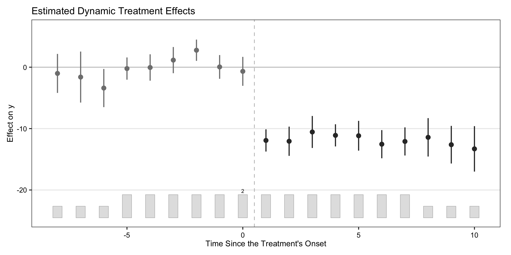

paquetes <- c("dplyr", "ggplot2", "estimatr", "tidysynth", "gsynth", "fabricatr")
for (pkg in paquetes) {
if (!require(pkg, character.only = TRUE)) {
install.packages(pkg, dependencies = TRUE)
library(pkg, character.only = TRUE)
}
}Referencia R: diferencias en diferencias y control sintético
Parte 4 · el 2×2, el DiD como regresión, tidysynth de punta a punta y gsynth
Esta página reúne, con código que podés correr y copiar, todas las funciones de R del bloque de diferencias en diferencias y control sintético (diapositivas), más varias funciones extra de tidysynth y gsynth que no entraron en las slides pero que vas a querer tener a mano. Cada sección explica en pocas frases qué hace el comando, muestra un bloque ejecutable con su salida real, y cierra con una nota sobre cuándo conviene usarlo.
Los ejemplos trabajan sobre los datos simulados del caso de los homicidios en São Paulo (Freire, 2018). Como la semilla está fija (set.seed(1)), los números coinciden con los de las diapositivas y con el archivo homicidios.csv. Es una versión más chica y más corta que el paper (16 estados, 1990-2005), pensada para que corra rápido.
1 Paquetes y datos
Cargá los paquetes del bloque. El bucle instala cada uno solo si te falta. La novedad frente a los datos de la mañana es add_level: fabricatr arma un panel con un nivel para los estados y otro para los años, así cada estado aparece repetido a lo largo del tiempo.
Las dos columnas que mandan son tratado (1 sólo para São Paulo) y post (1 desde el año 2000): su producto enciende el efecto. El resto son covariables que después ayudan a elegir los pesos del control sintético.
set.seed(1)
datos <- fabricate(
unidad = add_level(
N = 16,
estado = c("São Paulo", "Rio de Janeiro", "Minas Gerais", "Bahia",
"Paraná", "Rio Grande do Sul", "Pernambuco", "Ceará", "Pará",
"Santa Catarina", "Goiás", "Maranhão", "Espírito Santo",
"Paraíba", "Amazonas", "Mato Grosso"),
tratado = as.integer(estado == "São Paulo"),
base = ifelse(tratado == 1, 30, runif(N, 15, 45)),
pib_pc = round(rlnorm(N, log(12000), 0.25)),
gini = round(runif(N, 0.48, 0.62), 3),
poblacion_urbana = round(runif(N, 0.55, 0.95), 3),
jovenes_pct = round(runif(N, 0.16, 0.24), 3)
),
periodo = add_level(
N = 16,
anio = 1990:2005,
post = as.integer(anio >= 2000),
efecto = -14.5 * (1 - exp(-(anio - 1999))) * tratado * post,
tasa_homicidios = pmax(0, round(base + 0.8 * (anio - 1990)
+ efecto + rnorm(N, 0, 1.5), 1))
)
)
datos <- datos[, c("estado", "anio", "tasa_homicidios", "pib_pc", "gini",
"poblacion_urbana", "jovenes_pct", "tratado", "post")]
head(datos, 4) estado anio tasa_homicidios pib_pc gini poblacion_urbana jovenes_pct
1 São Paulo 1990 29.8 13858 0.583 0.81 0.195
2 São Paulo 1991 32.1 13858 0.583 0.81 0.195
3 São Paulo 1992 32.2 13858 0.583 0.81 0.195
4 São Paulo 1993 31.5 13858 0.583 0.81 0.195
tratado post
1 1 0
2 1 0
3 1 0
4 1 0
NotaCuándo usarlo
Este bloque es para cuando tenés una o pocas unidades tratadas (un estado, un país), la política ya ocurrió, y no hay ni sorteo ni umbral. Lo que sí tenés es tiempo: varios años de datos para el caso tratado y para otras unidades que le sirvan de espejo. add_level es la forma de simular ese panel.
2 Diferencias en diferencias: el 2×2 a mano
El estimador más simple sale de cuatro promedios: São Paulo y los donantes, antes y después de 2000. group_by(tratado, post) los arma en una tabla de dos por dos.
medias <- datos |>
group_by(tratado, post) |>
summarise(tasa = round(mean(tasa_homicidios), 2), .groups = "drop")
medias# A tibble: 4 × 3
tratado post tasa
<int> <int> <dbl>
1 0 0 34.5
2 0 1 41.0
3 1 0 33.8
4 1 1 27.8# la doble resta: (São Paulo después - antes) - (donantes después - antes)
(27.78 - 33.85) - (40.99 - 34.54)[1] -12.52São Paulo baja de 33,8 a 27,8 (cae 6,1); los donantes suben de 34,5 a 41,0 (ganan 6,4). La diferencia de las diferencias da ≈ −12,5 por 100.000. La primera resta saca lo fijo de São Paulo; la segunda saca la tendencia común a todos.
NotaQué mirar
El 2×2 es el DiD en su forma más pura y sirve para entender la lógica. Vale sólo si, sin la política, São Paulo hubiera seguido la misma tendencia que los donantes (tendencias paralelas). Para muchos grupos y fechas, en vez de la resta a mano se usa una regresión con efectos fijos (paquete fixest).
3 La misma cuenta, en un gráfico
La doble resta se ve mejor dibujada: São Paulo contra el promedio de sus 15 donantes, con el contrafactual DiD (São Paulo movido según la tendencia de los donantes desde 1999).
sp <- datos |>
filter(tratado == 1) |>
transmute(anio, tasa = tasa_homicidios, grupo = "São Paulo")
donantes <- datos |>
filter(tratado == 0) |>
group_by(anio) |>
summarise(tasa = mean(tasa_homicidios), .groups = "drop") |>
mutate(grupo = "Promedio de los 15 donantes")
serie <- bind_rows(sp, donantes)
# contrafactual DiD: São Paulo desde 1999, movido con la tendencia de los donantes
sp_99 <- sp$tasa[sp$anio == 1999]
don_99 <- donantes$tasa[donantes$anio == 1999]
contraf <- donantes |>
filter(anio >= 1999) |>
transmute(anio, tasa = sp_99 + (tasa - don_99), grupo = "Contrafactual DiD")
ggplot(serie, aes(anio, tasa, color = grupo)) +
geom_line(linewidth = 1.1) +
geom_point(size = 1.8) +
geom_line(data = contraf, aes(anio, tasa), color = "grey45",
linetype = "dotted", linewidth = 0.9, inherit.aes = FALSE) +
geom_vline(xintercept = 1999.5, linetype = "dashed", color = rojo, linewidth = 0.8) +
scale_color_manual(values = c("São Paulo" = azul,
"Promedio de los 15 donantes" = "grey55")) +
labs(x = NULL, y = "Homicidios por 100.000", color = NULL) +
tema_taller +
theme(legend.position = "top")
La distancia vertical entre São Paulo y la línea punteada (el contrafactual) es el estimado DiD.
NotaQué mirar
Antes de creerle al DiD, mirá las pre-tendencias: filtrá anio <= 1999 y fijate si las dos líneas ya iban parejas antes de la política. Pre-tendencias parecidas hacen el supuesto más creíble, pero no lo prueban. El paralelismo se rompe con anticipación, cambios de composición, o un Ashenfelter dip (la política llega justo cuando el resultado se estaba desviando).
4 El DiD como regresión: lm_robust
La doble resta que hicimos a mano es exactamente el coeficiente de una interacción. Con dos dummies alcanza: tratado (1 para São Paulo, no cambia en el tiempo) y post (1 desde 2000, igual para todas las unidades). El operador * pide las dos más su producto.
did <- lm_robust(tasa_homicidios ~ tratado * post, data = datos)
round(coef(summary(did))[, 1:4], 2) Estimate Std. Error t value Pr(>|t|)
(Intercept) 34.54 0.71 48.34 0.00
tratado -0.69 1.13 -0.61 0.54
post 6.45 1.16 5.58 0.00
tratado:post -12.52 1.58 -7.91 0.00Cada coeficiente es una celda del 2×2: el intercepto es el donante típico antes de la política (34,5); tratado es la brecha que ya existía entre São Paulo y los donantes (−0,7); post es la tendencia común que subió a todos (+6,5); y la interacción tratado:post es lo que le pasó sólo a São Paulo y sólo después: −12,5, el mismo número de la resta a mano.
Escribir tratado * post equivale a tratado + post + tratado:post, igual que el tratamiento * zona del bloque de experimentos.
NotaQué mirar (y una advertencia)
La ventaja de la regresión es que escala: le sumás covariables, efectos fijos o errores agrupados sin cambiar de herramienta. Pero cuidado con leer ese valor \(p\) como una garantía: hay una sola unidad tratada, así que el error estándar descansa en la variación año a año, no en muchos São Paulos. Por eso el control sintético hace inferencia con placebos.
5 El control sintético en un pipe
El DiD pesa a todos los donantes por igual. El control sintético elige pesos para que un promedio ponderado de los donantes calque la trayectoria de São Paulo antes de la política. tidysynth arma todo en un pipe de dplyr: cada paso hace una cosa.
sc <- datos |>
synthetic_control(outcome = tasa_homicidios, # el resultado
unit = estado, # la unidad
time = anio, # el tiempo
i_unit = "São Paulo", # la unidad tratada
i_time = 1999, # último año sin política
generate_placebos = TRUE) |> # placebos para inferencia
generate_predictor(time_window = 1990:1999, # promedios pre-política
pib = mean(pib_pc), gini_m = mean(gini),
urb = mean(poblacion_urbana), jov = mean(jovenes_pct)) |>
generate_predictor(time_window = 1990:1999, tasa_pre = mean(tasa_homicidios)) |>
generate_weights() |> # elige los pesos
generate_control() # arma el sintéticoDefinís el problema con synthetic_control(), elegís los predictores pre-política con generate_predictor(), dejás que el método elija los pesos con generate_weights() y armás el clon con generate_control(). El objeto sc guarda todo: las series, los pesos y los placebos.
NotaCuándo usarlo
Es el método para una unidad tratada y muchos donantes, cuando querés un contrafactual a medida en vez de un promedio tosco. i_time es el último período sin tratamiento. generate_placebos = TRUE corre el método sobre cada donante también, que es lo que después permite hacer inferencia.
6 Ver el ajuste: plot_trends y plot_differences
Con el objeto armado, los diagnósticos son una línea cada uno. plot_trends() muestra São Paulo real contra su sintético; plot_differences(), la brecha entre los dos año a año.
sc |> plot_trends()
sc |> plot_differences()
Buen ajuste antes de 2000 y una brecha que se abre después: el São Paulo real cae por debajo de su clon. En el paper, con datos reales, 27 donantes y la serie hasta 2009, la brecha llega a unos 20 puntos.
NotaQué mirar
Lo primero es el ajuste pre-tratamiento: si el sintético no calca al tratado antes de la política, no hay contrafactual creíble. La brecha post es el efecto estimado. plot_trends() acepta time_window = si querés recortar los años del gráfico.
7 Los pesos y el balance
Los pesos son la comparación, y son transparentes: cualquiera puede leerlos y discutir si tienen sentido. grab_unit_weights() da el peso de cada donante; grab_predictor_weights(), cuánto pesó cada predictor al elegirlos.
sc |> grab_unit_weights() |> arrange(desc(weight)) |> head(5)# A tibble: 5 × 2
unit weight
<chr> <dbl>
1 Goiás 0.332
2 Espírito Santo 0.314
3 Bahia 0.0683
4 Rio Grande do Sul 0.0384
5 Minas Gerais 0.0328sc |> grab_predictor_weights()# A tibble: 5 × 2
variable weight
<chr> <dbl>
1 gini_m 0.000377
2 jov 0.0507
3 pib 0.787
4 urb 0.146
5 tasa_pre 0.0158 grab_balance_table() compara los predictores entre São Paulo, su sintético y el promedio del pool de donantes. Querés que las dos primeras columnas se parezcan (buen ajuste) y que difieran de la tercera (el sintético hace algo mejor que el promedio).
sc |> grab_balance_table()# A tibble: 5 × 4
variable `São Paulo` `synthetic_São Paulo` donor_sample
<chr> <dbl> <dbl> <dbl>
1 gini_m 0.583 0.574 0.543
2 jov 0.195 0.195 0.197
3 pib 13858 13858. 12787.
4 urb 0.81 0.810 0.782
5 tasa_pre 33.8 33.9 34.5
NotaQué mirar
Pocos donantes con peso, y que tengan sentido sustantivo, es buena señal; donantes de otro mundo con peso alto son motivo de sospecha. En la tabla de balance, el sintético (columna 2) debería quedar mucho más cerca de São Paulo (columna 1) que el promedio del pool (columna 3).
8 Inferencia por placebos
El control sintético no usa errores estándar: hace inferencia con placebos. Corre el mismo método sobre cada donante, como si él hubiera sido el tratado. Si São Paulo es un efecto real, su brecha tiene que ser la más extrema. plot_placebos() dibuja todas las brechas juntas.
sc |> plot_placebos(prune = FALSE)
Un problema: un donante con mal ajuste pre-tratamiento puede tener una brecha post enorme sólo por ruido. Por eso se compara la razón entre el error post y el error pre (MSPE): São Paulo debería tener la razón más alta. plot_mspe_ratio() la ordena, y grab_significance() la pone en números, con un valor \(p\) estilo Fisher.
sc |> plot_mspe_ratio()
sc |> grab_significance() |>
select(unit_name, type, pre_mspe, post_mspe, mspe_ratio, rank, fishers_exact_pvalue)# A tibble: 16 × 7
unit_name type pre_mspe post_mspe mspe_ratio rank fishers_exact_pvalue
<chr> <chr> <dbl> <dbl> <dbl> <int> <dbl>
1 São Paulo Trea… 1.38 162. 117. 1 0.0625
2 Bahia Donor 27.4 37.1 1.36 2 0.125
3 Paraíba Donor 84.6 102. 1.21 3 0.188
4 Rio Grande do… Donor 112. 121. 1.08 4 0.25
5 Mato Grosso Donor 108. 115. 1.07 5 0.312
6 Pernambuco Donor 188. 189. 1.01 6 0.375
7 Maranhão Donor 190. 180. 0.952 7 0.438
8 Espírito Santo Donor 16.6 14.2 0.851 8 0.5
9 Minas Gerais Donor 36.7 29.5 0.803 9 0.562
10 Pará Donor 64.5 50.6 0.784 10 0.625
11 Santa Catarina Donor 42.1 31.5 0.747 11 0.688
12 Paraná Donor 37.0 27.1 0.733 12 0.75
13 Ceará Donor 8.42 6.03 0.716 13 0.812
14 Amazonas Donor 13.7 8.20 0.598 14 0.875
15 Goiás Donor 3.88 1.70 0.437 15 0.938
16 Rio de Janeiro Donor 4.48 0.873 0.195 16 1
NotaQué mirar
El rank de São Paulo es lo que importa: rank 1 sobre 16 unidades da un valor \(p\) de 1/16 ≈ 0,06. Con pocos donantes no vas a bajar de ahí, así que el tamaño del pool limita cuán chico puede ser el \(p\). La razón MSPE corrige por la calidad del ajuste pre, que es más honesto que mirar la brecha cruda.
9 Extraer las series
Para hacer tus propios gráficos o cuentas, grab_synthetic_control() devuelve la serie real y la sintética del tratado en una tabla ordenada. Con placebo = TRUE trae también las de los donantes.
sc |> grab_synthetic_control() |> head(6)# A tibble: 6 × 3
time_unit real_y synth_y
<int> <dbl> <dbl>
1 1990 29.8 30.4
2 1991 32.1 32.0
3 1992 32.2 31.8
4 1993 31.5 32.5
5 1994 33.7 33.7
6 1995 32.3 32.7# la brecha acumulada post-2000, a mano
sc |> grab_synthetic_control() |>
filter(time_unit >= 2000) |>
summarise(brecha_total = sum(real_y - synth_y))# A tibble: 1 × 1
brecha_total
<dbl>
1 -75.1
NotaCuándo usarlo
Usalo cuando quieras salir de los gráficos que trae el paquete y armar los tuyos, o calcular efectos acumulados (vidas salvadas, casos evitados). La familia grab_* (grab_synthetic_control, grab_unit_weights, grab_predictor_weights, grab_balance_table, grab_significance) te da todos los componentes del objeto por separado.
10 Un placebo cambiando la unidad tratada
Una prueba directa: hacé como si un donante cualquiera (por ejemplo, Paraná) hubiera recibido la política. Si el método es creíble, no debería aparecer una brecha grande donde no hubo tratamiento.
placebo <- datos |>
filter(estado != "São Paulo") |> # sacá al tratado real del pool
synthetic_control(outcome = tasa_homicidios, unit = estado, time = anio,
i_unit = "Paraná", i_time = 1999,
generate_placebos = FALSE) |>
generate_predictor(time_window = 1990:1999,
pib = mean(pib_pc), gini_m = mean(gini),
urb = mean(poblacion_urbana), jov = mean(jovenes_pct)) |>
generate_predictor(time_window = 1990:1999, tasa_pre = mean(tasa_homicidios)) |>
generate_weights() |>
generate_control()placebo |> plot_trends()
Para Paraná el sintético lo sigue también después de 2000: la brecha queda cerca de cero. Eso valida el método, porque la brecha grande aparece sólo donde de verdad hubo política. Es la misma lógica del corte placebo del RDD.
NotaCuándo usarlo
Es un chequeo rápido para convencerte (y convencer a un lector escéptico) de que el efecto no es un artefacto del método. Sacá siempre al tratado real del pool con filter() antes de correr el placebo, para que no contamine la comparación.
11 Varios tratados y fechas escalonadas: gsynth
El control sintético clásico pide una unidad tratada y una sola fecha. Cuando tenés varios tratados, o distintos años de adopción, gsynth (Xu, 2017) generaliza el método con efectos fijos interactivos: arma el contrafactual con factores latentes y estima un solo efecto promedio (ATT).
set.seed(20)
panel <- fabricate(
estado = add_level(
N = 20,
inicio = c(2004, 2007, rep(NA, 18)), # año de la política; NA = nunca tratado
nivel = runif(N, 15, 45)), # nivel base de homicidios
periodo = add_level(
N = 16,
ano = 1998:2013,
tratado = as.integer(!is.na(inicio) & ano >= inicio), # 1 si ya está tratado
y = pmax(0, round(nivel + 0.6 * (ano - 1998) # baja 12 puntos mientras dura
- 12 * tratado + rnorm(N, 0, 1.5), 1)))
)gsynth() elige el número de factores por validación cruzada (CV = TRUE, probando de 0 a 3 factores con el argumento r) y estima la incertidumbre por bootstrap. force = "two-way" incluye efectos fijos de unidad y de tiempo.
out <- gsynth(y ~ tratado, data = panel,
index = c("estado", "ano"),
force = "two-way", CV = TRUE, r = c(0, 3),
se = TRUE, nboots = 200, inference = "parametric")out$est.avg # ATT promedio con su intervalo de confianza ATT.avg S.E. CI.lower CI.upper p.value
[1,] -11.77836 0.5869689 -12.9288 -10.62792 0plot(out, type = "gap") # la brecha promedio en el tiempo, alineada por adopción
El ATT promedio da ≈ −11,8, cerca del efecto verdadero (−12). La pre-tendencia es plana y la brecha aparece tras la adopción, alineando los dos tratados aunque empezaron en años distintos.
NotaCuándo usarlo
Es tu herramienta cuando el método clásico no alcanza: varios tratados, fechas escalonadas, o las dos cosas. plot(out, type = "counterfactual") muestra el tratado observado contra su contrafactual; type = "ct" los grafica juntos. El paquete fect, del mismo autor, agrega tests de pre-tendencias y de efectos dinámicos.
12 gsynth con matrix completion
gsynth trae un segundo estimador, estimator = "mc": completa la matriz de resultados no observados con técnicas de matrix completion (Athey et al., 2021). Suele ser más robusto cuando los efectos fijos interactivos no capturan bien la estructura del panel. Se corre igual, cambiando un argumento.
out_mc <- gsynth(y ~ tratado, data = panel,
index = c("estado", "ano"),
estimator = "mc", force = "two-way",
CV = TRUE, se = TRUE, nboots = 200,
inference = "nonparametric")out_mc$est.avg ATT.avg S.E. CI.lower CI.upper p.value
[1,] -11.80871 0.3597046 -12.51372 -11.1037 0El ATT queda en ≈ −11,8, igual que con los factores interactivos: cuando los dos estimadores coinciden, ganás confianza en el resultado.
NotaQué mirar
Correr los dos estimadores (ife y mc) y ver que dan lo mismo es una prueba de robustez barata. mc no necesita que elijas el número de factores. Con la inferencia no paramétrica (inference = "nonparametric") el bootstrap remuestrea unidades, apropiado cuando hay pocos tratados.
13 Para seguir
TipEnlaces y lecturas
Los paquetes
tidysynth: control sintético clásico en un pipe (el que usamos hoy)gsynthyfect: varios tratados y adopción escalonada, con factores interactivos o matrix completionsynthdid: el synthetic DiD de Arkhangelsky et al. (2021), que combina lo mejor de los dos métodosdid(Callaway y Sant’Anna) yfixest: DiD escalonado con muchos grupos y efectos fijos a escala
Para leer
- Abadie (2021): el survey del Journal of Economic Literature
- Abadie, Diamond y Hainmueller (2010): el paper canónico (el programa antitabaco de California)
- Los capítulos de DiD y control sintético de The Mixtape y The Effect, gratis online
Nuestro caso del bloque
- Freire (2018): los homicidios en São Paulo con control sintético
- Pantaleão (2025): otra hipótesis para la caída, la gobernanza criminal del PCC